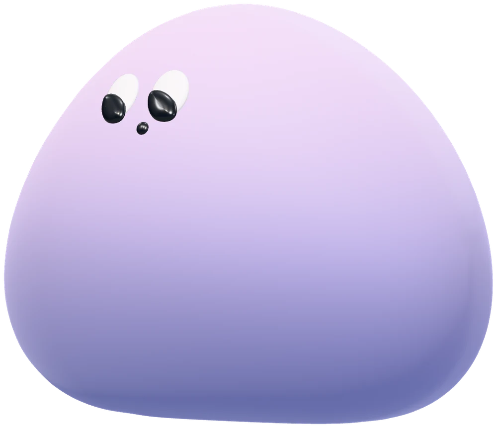
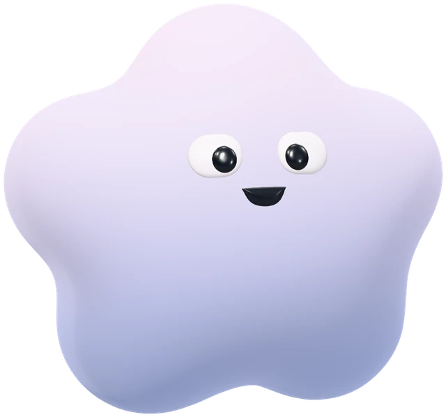
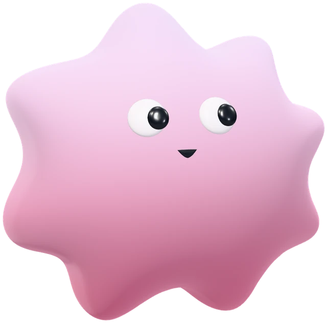
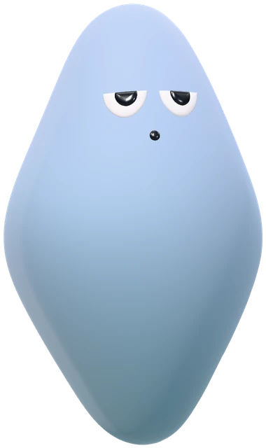
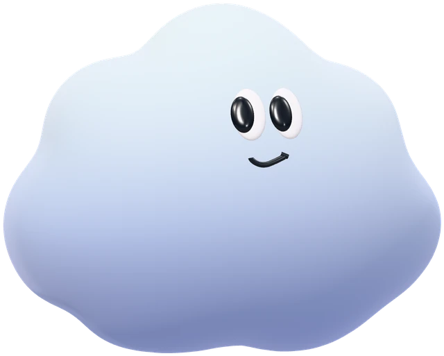

กำลังปั้นกระทงสำหรับ
Mold a Wishมาปั้นกระทงกัน
เลือกฐาน ดอกไม้ และของตกแต่งที่ชอบ
เริ่มปั้นกระทงใบใหม่?
กระทงที่แต่งไว้และคำอธิษฐานตอนนี้จะหายไป
กำลังปั้นกระทงสำหรับ
เลือกฐาน ดอกไม้ และของตกแต่งที่ชอบ
Mold a Wish
กำลังปั้นความสุขเล็ก ๆ ให้คุณ…
โหลดไม่สำเร็จ ลองอีกครั้งนะ





ต้นแบบนี้ใช้ WebGL ในการแสดงโต๊ะปั้นและกระทง ลองเปิดด้วย Chrome, Edge หรือ Safari รุ่นล่าสุดบนเดสก์ท็อป แล้วเปิดการเร่งฮาร์ดแวร์